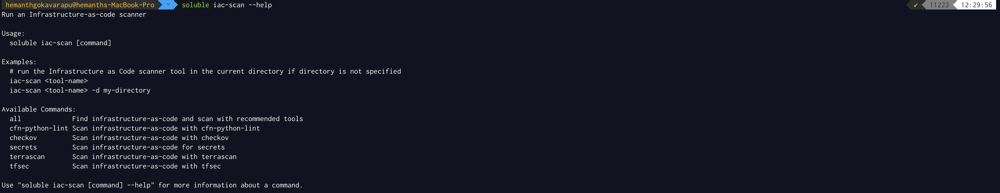
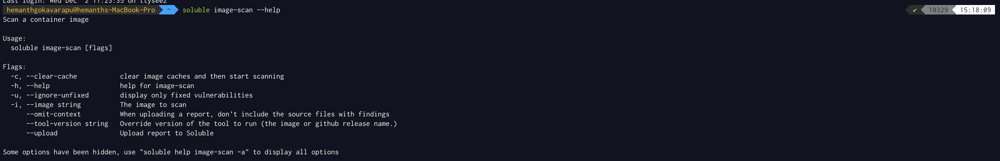
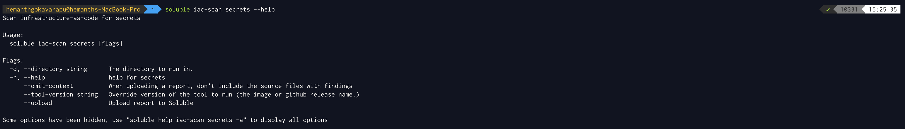

Assessments
Static Code Analysis
The Soluble Fusion platform allows you to operationalize the data collected from the open source static code analysis tools, including:
We let you use your existing policies created for the above open source tools and take advantage of the community contributed policies along with the Soluble policies developed for you.
We give you flexibility to run one or more of such tools of your choice, to provide maximum security coverage of your infrastructure and to give you freedom from vendor lock-in.
If you want us to integrate with any other tools or solutions, please let us know by emailing the support.
You need Soluble CLI to start using the above tools. Please follow the Soluble CLI installation steps to install the CLI.

Image Scanning
Soluble provides a simple and comprehensive vulnerability scanner for containers and other artifacts. It's easy to plug in to CI.

Posture Management
Soluble posture management checks for misconfigurations in Kubernetes clusters that can lead to data breaches and leaks. This automated detection allows organizations to make necessary changes on a continuous, ongoing basis, throughout the software development lifecycle.
Secrets Scanning
The Soluble secrets scanner searches through git repositories for secrets. Plugging this CLI service into the CI provides an easy way to prevent accidental check-in of secrets.
